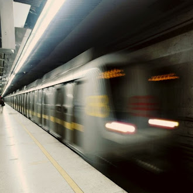
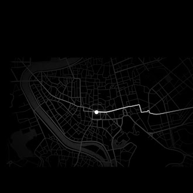
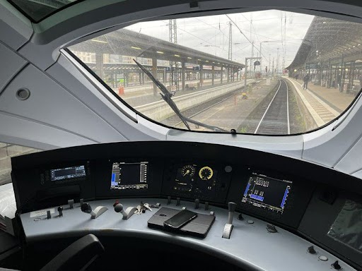

Explore o sistema

Velocidade
Monitore a velocidade dos trens em tempo real.

Localização
Rastreie a posição exata de cada composição na linha.

Consumo de Energia
Acompanhe o consumo energético e otimize operações.